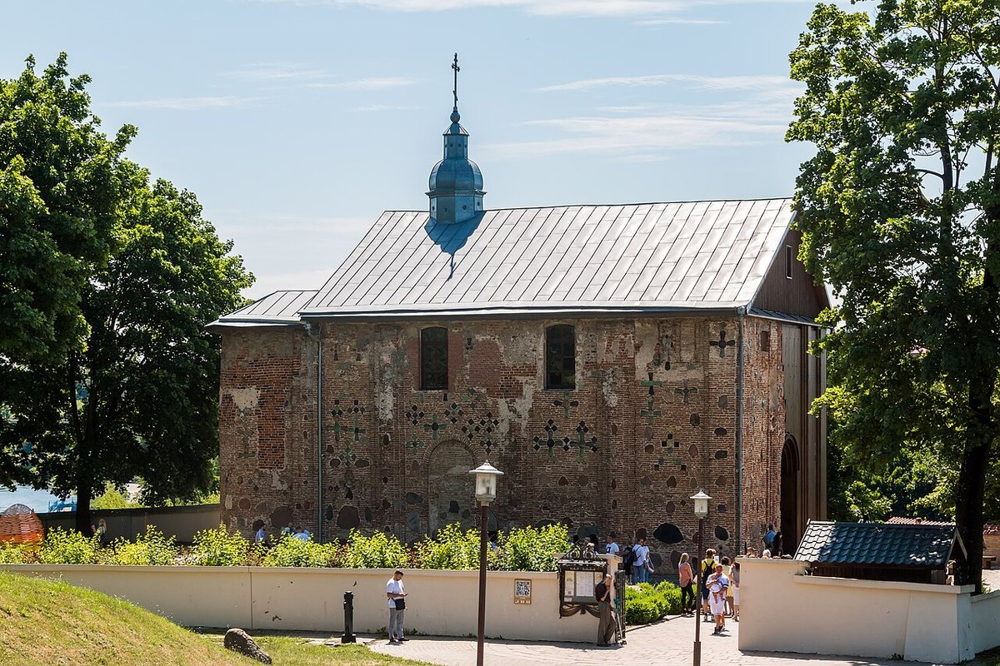
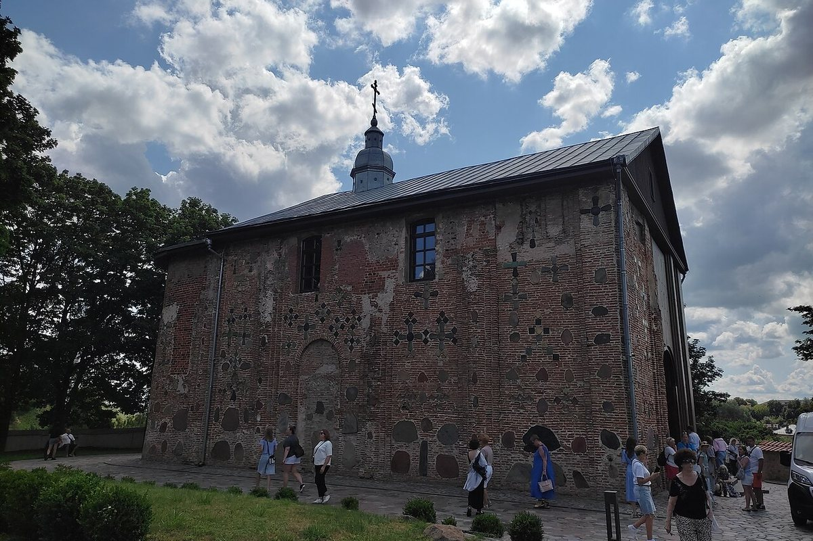

Борисоглебская (Коложская) церковь — один из древнейших сохранившихся храмов Беларуси, памятник гродненской архитектурной школы.
Борисоглебская (Коложская) церковь стоит на правом берегу Немана в Гродно, недалеко от устья Городничанки. Она построена в 1180-х годах и относится к гродненской архитектурной школе.
Для строительства использовали плинфу, голосники, обработанный камень и цемянку. Фасады и пол украшали майоликовые плитки; стены были расписаны фресками, от которых сохранился небольшой фрагмент.
Церковь входит в число древнейших сохранившихся храмов Беларуси и является объектом Государственного списка историко-культурных ценностей.
Сегодня это действующий храм и один из главных символов Гродно. Рядом находятся Старый замок и набережная Немана.

